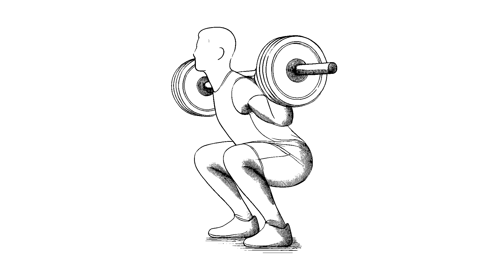
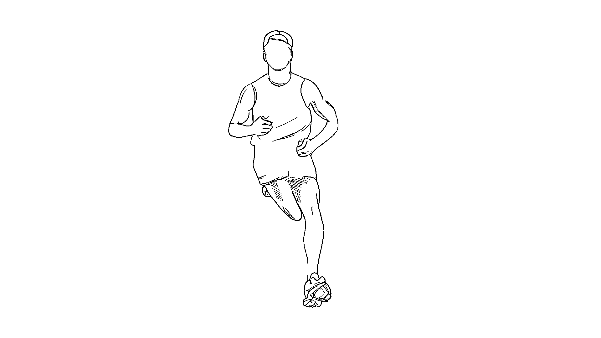
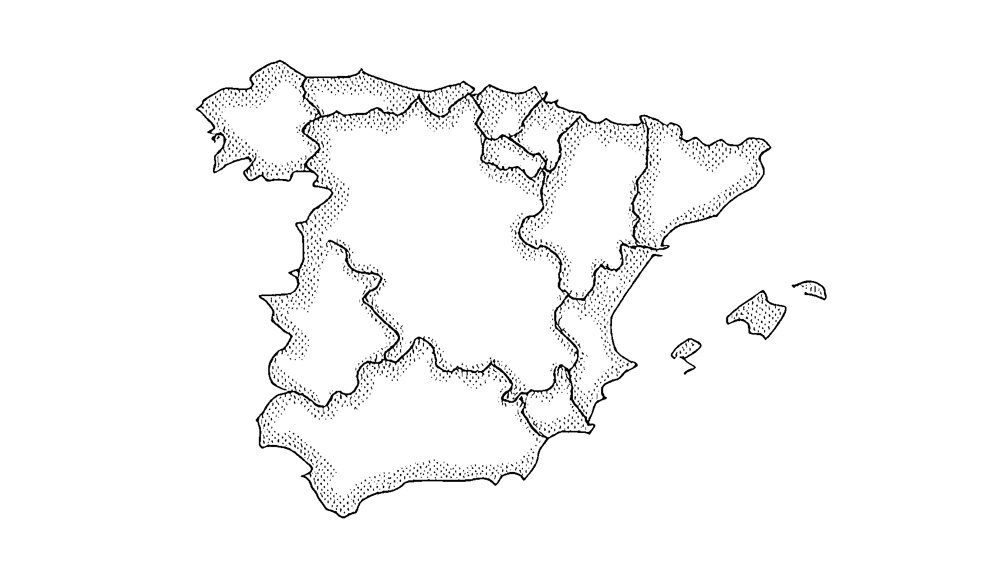
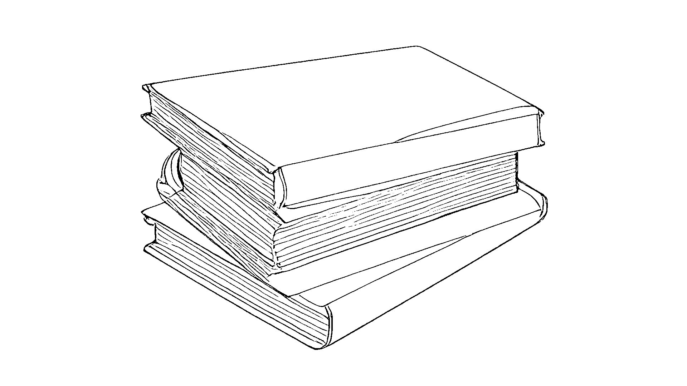

Auf dieser Seite findet man einige meiner Projekte. Ich versuche meinen Alltag so zu leben, dass ich möglichst viel Zeit mit diesen Aktivitäten verbringen kann. Es hilft mir die Informationen, die ich zu bestimmten Themenbereichen gelesen habe an einem Ort zusammenzutragen.
Seit dem Wintersemester 2023 studiere ich Psychologie.

Seit Oktober 2023 treibe ich regelmäßig Kraftsport. Fortschritte, Einsichten und Notizen findet ihr auf dieser Seite.

Schon seit längerem habe ich vor Ausdauersport zu treiben.

Spanisch soll die dritte Sprache werden, die ich spreche.

Ich habe eine lange Leseliste, die ich gerne kürzen möchte.

Durch meine Universität habe ich Zugriff auf die Kurse von O'reilly, welche ich gerne durcharbeiten würde.
Hier findest du schon abgeschlossene Projekte: